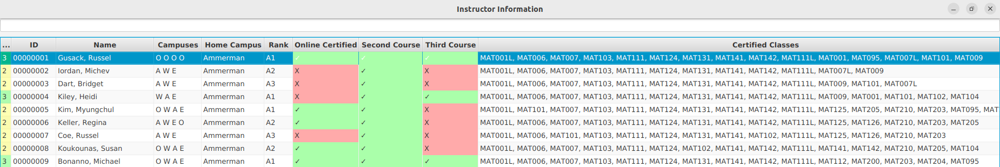
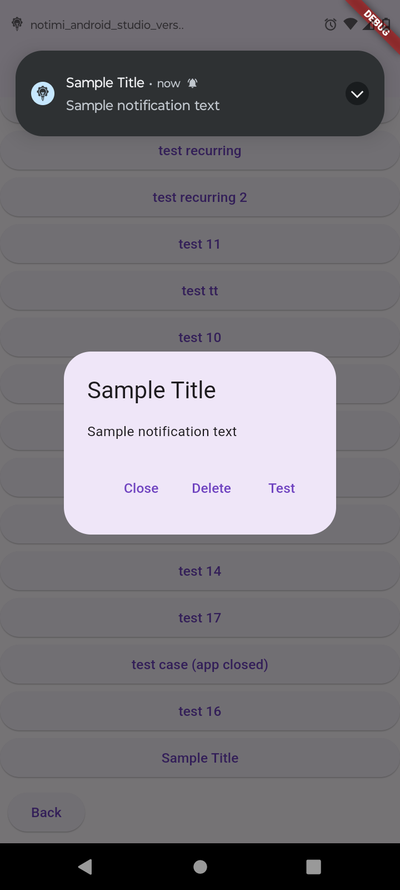
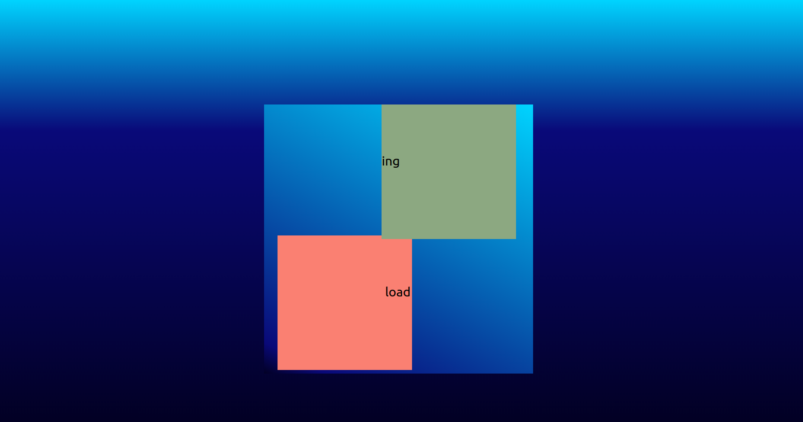
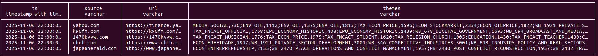

Hello Reader! Before we get started, how about some music? The player above will share some nostalgic music from one of my favorite childhood video games. The music will change based on the time of day it is played at, and over time nature sounds play over the music to further immerse you in the music.

College Course Manager
This was one of the earlier projects that I completed during my time in college. It required students to parse data given to us by our instructor from excel and csv files to create an application that can display a list of instructors that the use can interact with. You could assign teachers courses, unassign courses and all of this would be guided by an intuitive GUI designed to let the user know what the best courses to assign are. These choices would be guided by what course the instructor already had experience teaching. Any change would be saved in a serialized file for data persistance.
I learned a lot in this project, but what I'm most proud of was that I created my own data sets in Python in order to stress test my application and saw that it worked with very little lag with up to 10,000 sample instructors. What made this application so fast was that I used a hashset to couple courses together by section, and I also used a hashset to store the instructors to quickly search them by ID.
However, the most important lesson I learned is one in responsible handling of code and version management. In my haste to finish the project I forgot to upload the final version to GitHub. I had also pulled an all-nighter, not out of necessity but because there were additional features that I wanted to add so that it would be entirely intuitive to use and feel better for the user. However, tired as I was, without noticing I had accidentally saved over my updated code with an old version and wound up losing my progress... If nothing else it was a lesson learned, and a mistake I don't see myself making any time soon.

Pokemon Infinite Fusions Generator
Balancing work and play is crucial, and with the Pokémon Infinite Fusions Team Builder, I've embraced this philosophy. This innovative application not only allows players to indulge in the creation of unique Pokémon fusions but also showcases my technical skills in full-stack development.
The core of the project is a robust database system that manages user accounts, including secure login and registration processes. This ensures a personalized experience for each user, allowing them to build and save custom teams of fused Pokémon, with data persisting across sessions for seamless access anytime.
What truly sets this application apart is the staggering potential for over 175,000 unique Pokémon combinations, made possible through web scraping with Flask.
This empowers users to craft entirely unique Pokémon fusions, enhancing their engagement and creativity. The flexibility extends to visual customization, with several different sprites available for many Pokémon fusions, ensuring that every user's experience is distinct and filled with endless possibilities.
As a testament to my skills in database management, backend development with Flask, and frontend user experience design, the Pokémon Infinite Fusions Team Builder represents the perfect blend of my technical prowess and creative vision, pushing the boundaries of what's possible in interactive web applications.

Notimi - Notify Me!
Where this app shines is it's use of design patterns for flexibility and easily scaleable code. It makes use of the strategy design pattern to allow users to schedule notifciations with differing behaviors, aswell as the template pattern so users may quickly create different notifications which will share similar text or notification behaviors. This application also employs the decorator pattern, so that if a notification is for a task the user must complete, they may choose to make the notification trigger at closer intervals at the allotted time to ensure that you stay on task. This app is designed to work even in the most niche cases. You may also set notifications for distant dates and intervals. For example, if you want to be notified a week before an end of year meeting every year, you may log into the app once and set this up to take care of this indefinitely.
Designed in flutter using Dart and Kotlin, this app is my first foray into android development. It presented several challenges such as bypassing the strict battery saving rstrictions enforced by new android devices. I managed to bypass these restrictions by using local notifications so that they will still be pushed in low power mode.

Stock App
This project was developedto demonstrate full-stack design principles and external API integration under rate-limited conditions. It serves as a real-time stock tracker and news aggregator that helps users form data-driven investment decisions.
The application communicates with the RESTful API Google Finance to retrieve stock metrics, and aggregates RSS feeds from financial publishers using asynchronous JavaScript calls. Server responses are cached to reduce load times and API throttling issues.
Built with Flask and React, it features dynamic chart rendering, user input validation, and animated loading states for an intuitive user experience. Special attention was given to UX/UI cohesion, ensuring a visually calm layout that makes complex financial data accessible to non-technical audiences.

Article Analysis
This independent project applies natural language processing and large-scale data engineering concepts to cluster and retrieve related news articles from the GDELT global event database. It was created to explore topic modeling, semantic similarity, and the use of vector search for thematic analysis.
Using DuckDB and Parquet for efficient columnar storage, the pipeline parses millions of GDELT entries containing locations, persons, and themes. Text embeddings are generated using OpenAI’s CLIP model and stored as sparse matrices via SciPy for scalable similarity retrieval.
The project’s backend supports hybrid search (keyword + vector) with latency-aware caching. A command-line interface and notebook visualizations were developed for exploratory data analysis and performance benchmarking.